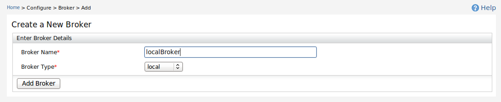
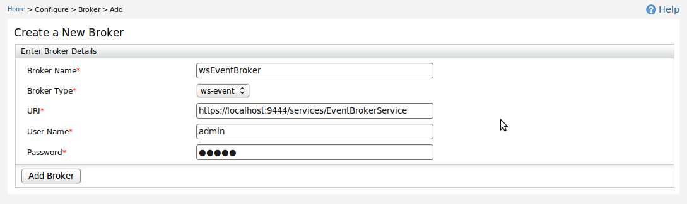
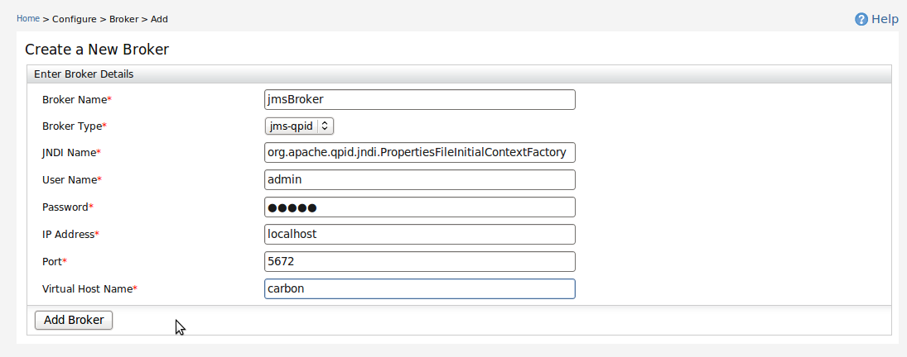

There are three broker types available to create such as Local, WS-Event and JMS-Qpid.

Figure 1: Create Local Broker
To create a local broker, only the broker name is required.

Figure 2: Create WS-Event Broker
To create a ws-event broker, add the Event broker service URI in URI field.

Figure 3: Create JMS-Qpid Broker
To create a jms-qpid broker, set the properties as in the image. Virtual host name can be found in virtualhosts.xml file located in $CARBON_HOME/repository/conf/advanced/. These parameters are used to get a TCP connection to the broker.
Figure 4: List Brokers
All the created brokers are listed and can be deleted.